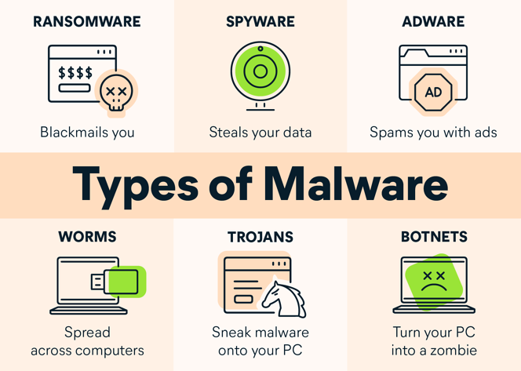

The special thing in this is that it is used by many hacking ( hacker ) in their own interest and users do not even know what message material has been sent through its mail. It also includes spyware and adware programs such as tracking cookies. These programs are used for surfing the net. Apart from this, there are also scary programs like key loggers, Trojan horse worms and viruses.
Malware Viruses.
Worm Malware.
Trojan Malware
Ransomware
Bots or Botnets
Rootkits
Spyware
Spear Phishing
Symptoms Of Malware
If you see suspicious popup windows, unwanted toolbars, redirects, unusual Google search results, or other unexpected behavior on a computer, it is possible that harmful software, ie 'malware', has been installed on that computer. To prevent this, one has to first use anti-spyware software to detect and remove malware from the computer. There are many programs available in the market that can remove the most common malware. Detecting each instance of malware on a computer may require attempts from several of these software.
Detection Of Malware
Detecting each instance of malware on a computer may require attempts from several of these software. Try to use the latest versions of these programs. Some of these programs are:
- Lavasoft adware
- Spybot search and destroy
- Malware Bytes Anti Malware
- MacScan (for Mac computers)
Counter Measures
Safe Browsing is the best way to prevent malware. The Safe Browsing functionality that enables phishing and malware detection in the Google Chrome web browser is designed to protect computers and privacy, while conserving transmission wavelengths by sending small amounts of data to and from the computer. When this feature is enabled, Google downloads a list of information to the browser about sites that are prone to malicious software, or that may engage in phishing. The full URL of each suspicious site in the listRather, each URL is mixed up as vague and unreadable and then parted. Only part of each composite URL is used on the list available on the browser.
When browsing the Internet on a computer, the browser generates mixed versions of the URLs it has visited and checks them from the list. If a site visited appears to match a mixed URL segment on the list, the browser tells the computer to contact Google's servers to request a complete list of the mixed URLs considered risky. Users can then decide whether to use this warning or skip ahead. When the computer contacts Google to obtain further information about a specific compound URL segment, or to update the list, Google receives standard log information, including an IP address and possibly a cookie. This information is not personally identifying and is only kept for a period of a few weeks.
Types Of Malware
- Malware viruses
- Worm malware
- Trojan malware
- Ransomware
- Bots or botnets
- Adware malware
- Spyware
- Rootkits
- Fileless malware
- Malvertising
